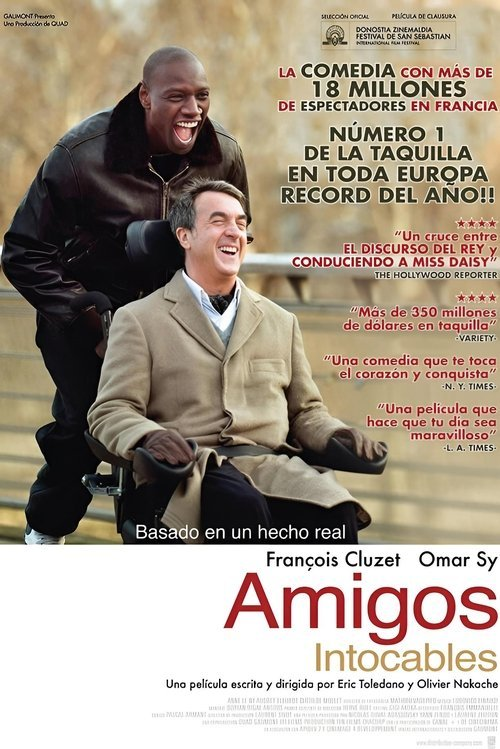

Intocable (2011)
Sinopsis Rápida
Un aristócrata cuadripléjico contrata a un joven de los suburbios como cuidador, desencadenando una improbable amistad que desafiará sus mundos completamente opuestos y cambiará sus vidas para siempre.
Sinopsis Detallada
Intocable cuenta la historia de Philippe, un rico aristócrata parisino que queda paralítico tras un accidente, y Driss, un joven franco-argelino de los suburbios con antecedentes penales que es contratado como su cuidador. A pesar de sus diferencias culturales y sociales, una amistad inesperada florece entre ellos, llena de humor, momentos conmovedores y reflexiones sobre la vida, la discapacidad y la amistad. La película explora temas de prejuicios, superación personal y el verdadero significado de la conexión humana. Su sinceridad y humor inteligente la convierten en una experiencia cinematográfica memorable.
¿Por qué tenés que verla?
- Una historia conmovedora y divertida que te tocará el corazón.
- Las actuaciones estelares de Omar Sy y François Cluzet son magistrales.
- Su éxito global impulsó una conversación sobre la representación de la discapacidad en el cine.
- Una comedia que va más allá del humor, explorando temas profundos con sensibilidad.
Idea Extra
Comparación cultural: Cómo la película refleja las diferencias socioculturales entre la clase alta y la clase baja en Francia.
{{CONTENIDO_RELACIONADO}}